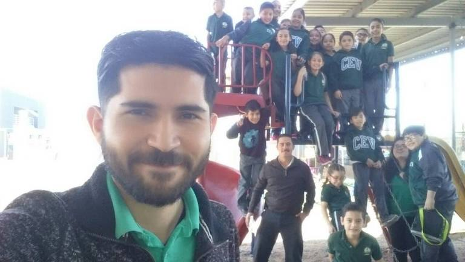

Centro Educativo Vástago inició sus labores en agosto del ciclo escolar 2015-2016. Nace como un ministerio a una fuerte carga que Dios puso en el corazón de nuestros pastores, con el propósito de fortalecer a las familias cristianas que buscan una educación integral y trascendental para sus hijos, fundamentada en una currícula académica de alto nivel, formación de valores cristocéntricos , desarrollo de aptitudes y habilidades artísticas, al igual que el inglés como idioma fundamental. Somos una organización de padres y maestros comprometidos en desarrollar en nuestros estudiantes habilidades autodidáctas a través de una amplia visión del mundo.
Centro Educativo Vástago inició sus labores en agosto del ciclo escolar 2015-2016. Nace como un ministerio a una fuerte carga que Dios puso en el corazón de nuestros pastores, con el propósito de fortalecer a las familias cristianas que buscan una educación integral y trascendental para sus hijos, fundamentada en una currícula académica de alto nivel, formación de valores cristocéntricos , desarrollo de aptitudes y habilidades artísticas, al igual que el inglés como idioma fundamental. Somos una organización de padres y maestros comprometidos en desarrollar en nuestros estudiantes habilidades autodidáctas a través de una amplia visión del mundo.
Para el primer ciclo escolar 2015-2016 iniciamos con los tres grados de secundaria, con una matrícula de 12 alumnos, posteriormente tuvo un incremento a 19 estudiantes durante el ciclo 2016-2017 y actualmente contamos con 17 alumnos en educación media básica. Puedo dar testimonio de cómo Dios ha trabajado en la vida de los adolescentes gracias al compromiso y lucha diaria de tomar decisiones sabias de acuerdo a la Palabra de Dios. Como prueba de ello mencionaré la condición en la que un alumno llegó a tercer grado de secundaria, su historial era de dos a tres reportes de indisciplina diarios, su rostro era de pocos amigos, serio y muy poco tolerante con el resto de sus compañeros. Gracias a Dios su vida ha sido transformada, ahora es un chico amable, cariñoso, responsable, disfruta al máximo cada viaje misionero, compartiendo con otros lo que el Señor ha hecho en su vida. Varios de nuestros alumnos de secundaria han ingresado presentando algún tipo de problema académico como deficiencias en comprensión lectora, razonamiento lógico y solución de problemas matemáticos. Otro factor que hemos detectado en algunos chicos es que vienen con un trasfondo disfuncional a pesar de que provienen de familias cristianas, presentando como consecuencia inestabilidad emocional.
Por otro lado cabe mencionar que nos han llegado casos de alumnos con problemas tales como Asperger, inmadurez, atención dispersa y dislexia, entre otros; gracias a la atención personalizada que se les brinda y el contacto constante con la palabra de Dios se han logrado importantes avances.
El proceso de validez de estudios y migración de secundaria a preparatoria ha sido canalizado a través de INEA. Los adolescentes con 15 años cumplidos han presentado el examen en línea, cabe mencionar que han obtenido excelentes calificaciones. Seguimos implementando estrategias grupales e individuales que nos brinden apoyo de acuerdo a las necesidades detectadas para lograr el propósito de este tipo de educación en línea.
Profesor Juan Isaías López Ochoa
Tutor de Primaria
El área de primaria se inició con 17 alumnos abarcando casi todos los grados. Aumentando el alumnado en proporción como Dios ha dado. Actualmente son 22 alumnos dividido en 2 salones (grado 1,2,3,4 en un salón, y grado 5 y 6 en otro). Los padres de familia son quienes han recomendado a CEV. Nosotros no hacemos publicidad.
Algunos niños llegan por situaciones emocionales y ésta área como maestros es la que más nos preocupa. Les damos una atención personal y ellos saben que Dios restaura y da paz en sus vidas. Actualmente somos 5 maestros: 3 en el área educativa, 1 en la enseñanza de la música y 1 en el idioma inglés.
Estuvimos haciendo adecuaciones para impartir los conocimientos, haciendo un rol de actividades, iniciando con devocional y transcripción bíblica. Esto fue muy emocionante, no estaban acostumbrados a tener un devocional como parte de su educación diaria. La música como parte de su crecimiento forma parte de un eslabón en la educación de ellos. La respuesta ha sido favorable, han descubierto dones y talentos que Dios puso en cada uno y los padres están felices de ver a sus hijos desarrollando esa habilidad. Gracias a Dios la aceptación ha sido buena, los padres de familia nos platican de los cambios que han tenido sus hijos, principalmente en su relación con Dios, en la conducta y en lo educativo. Esta parte se desarrolla en la plataforma educazion.net y ellos se sienten emocionados, crecen en autonomía y en seguridad de saber que lo que hacen es un trabajo que los lleva a la madurez intelectual.
Ser responsable en el área de primaria me ha llevado a un crecimiento total en lo personal. En lo espiritual mi relación con Dios es aún más grande, Él da la sabiduría, yo solamente obedezco. Al principio me pregunté: ¿Cómo daré clases a todos los grados al mismo tiempo?... La respuesta fue: Dios es bueno, y Él nunca nos da más de lo que no está dentro de nuestro alcance. Actualmente veo la educación de una forma familiar donde los alumnos son parte de mi entorno dentro y fuera del salón de clases. Pienso en nuevas estrategias de enseñanza para que ellos logren la excelencia educativa en su mente y su corazón. Doy gracias a Dios que me puso en este Centro Educativo, mi compromiso es llevar a los niños a tener una vida completamente cristocéntrica, que crezcan en lo educativo alcanzando en todo momento sus propósitos.
